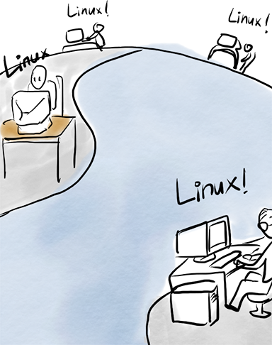
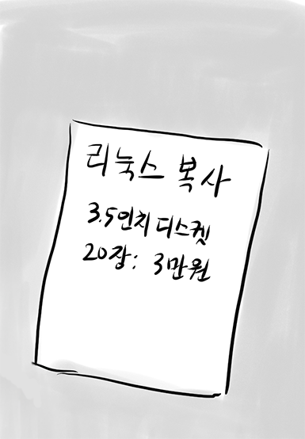

한달 후에 미닉스 설치 디스켓이 도착했다.
드디어 미닉스를 설치하는구나
하지만, 미닉스의 여러 부분에 실망을 느꼈다.

학교 유닉스 시스템에
접속해야 하는데, 터미널
에뮬레이션 기능이
시원치 않군
접속해야 하는데, 터미널
에뮬레이션 기능이
시원치 않군
핀란드의 긴 겨울 동안 386 하드웨어도 배울 겸해서 터미널 에뮬레이터를 개발을 시작했다.
음..386 PC에
동작하는 터미널 에뮬레이터를 만들어 볼까?
동작하는 터미널 에뮬레이터를 만들어 볼까?
운영체제 없이 바로 실행되는 터미널이라서 BIOS등 하드웨어를 잘 알아야했다. 에뮬레이터에 여러 기능을 추가할 수록 운영체제의 모습을 갖추기 시작했다. 91년 9월 17일에 0.01 버전을 ftp 사이트에 공개했다.
그해 12월 0.11버전을 공개했다.
From: torvalds@klaava.Helsinki.FI (Linus Benedict Torvalds)
Newsgroups: comp.os.minix
Subject: Re: Status of LINUX?
Summary: Still in beta
Message-ID:
Date: 19 Dec 91 23:35:45 GMT
Organization: University of Helsinki
Linux is still in beta (although available for brave souls by ftp),
and has reached the version 0.11. It's still not as comprehensive
as 386-minix, but better in some respects. The "Linux info-sheet"
should be posted here some day by the person that keeps that up to
date. In the meantime, I'll give some small pointers.
First the bad news:
- Still no SCSI: people are working on that, but no date yet.
Thus you need a AT-interface disk (I have one report that it
works on an EISA 486 with a SCSI disk that emulates the
AT-interface, but that's more of a fluke than anything else:
ISA+AT-disk is currently the hardware setup)
As you can see, 0.11 had already a small following. It wasn't much,
but it did work.
- still no init/login: you get into bash as root upon bootup.
That was still standard in the next release.
- although I have a somewhat working VM (paging to disk), it's not
ready yet. Thus linux needs at least 4M to be able to run the
GNU binaries (especially gcc). It boots up in 2M, but you
cannot compile.
...
라이선센스도 간단해서 리눅스를 다른 사람에게 판매하지 않고, 코드를 향상 시키면 모든 사람이 볼 수 있도록 코드를 공개하는 조건으로 했다.
돈 대신 엽서를 받기로 했지만.. 와우!

반응은 좋았고 사람들은 미닉스. 대신 리눅스를 사용하기 시작했다.
유닉스 모임에서 리눅스를 서로 복사하는 일은 흔한 일이 되었다.

하지만, 일부 사람들은 돈을 받고 리눅스를 복사해주기도 했다.
리눅스를 돈주고 팔다니.. 저작권 위반이야.